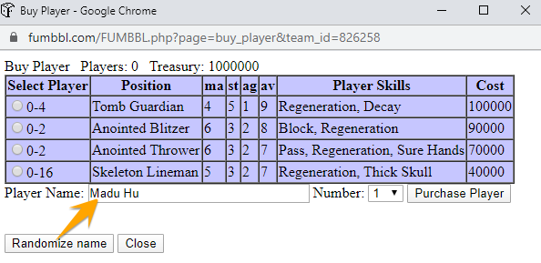

How does it work?
It works automagically!
When the usual Buy Player screen is opened, you'll get a new fancy random name!
You don't like the name? Keep pressing the random button!

How to set it up on Chrome?
- Install the official Tampermonkey Extension from the Google Chrome Web Store. If you have it already, skip this step.
- Install the Roante's NameGen Button Addon.
- You're done! :-)
How to update?
Nah. Not relevant yet. Bookmarklets removed, they were so oldschool. Too 2000-ish.History
Irrelevant lol. Check git history.Acknowledgement
Many thanks for Creative Role Playing for compiling a list of fantasy-sounding names which I unashamedly stole :-)
Additionally, there were a few online resources I used for the script (hopefully I have not forgot to include every reference):
- Chronofus' Amazon Names List (Amazons, Greeks, Arthurian/Saxon, Celtic, Roman, Egyptian, Viking and Generic names)
- List of Chaos Lords (W40k Lexicanum Wiki)
- Chaos Dwarf Names (Chaos Dwarfs Wiki)
- Dark Elf Name Generator (Seventh Sanctum)
- Dwarf Names (Warhammer Fluff) (Bugmans Brewery)
- List of Warhammer Fantasy characters (Wikipedia)
- [WFRP] Help me with elf names (RPG.net)
- WFRP Elf Male Character Generator (Winds of Chaos)
- Orc and Goblin Name Generator (paper-dragon.com)
- The World's Healthiest Foods (for the Halflings ☺)
- Halfling Names (Manicarpe's Guide)
- List of royal and noble ranks (Wikipedia)
- Names of Egyptian origin (mybirthcare.com)
- Incan names (lowchensaustralia.com -- I've just recognized this is a dog name giving site LoL. Well, Saurii and Slanns are also animal-alike creatures ☺)
- Blood Bowl Cyanide Game
- Viking Names found in Landnámabók (by Aryanhwy merch Catmael aka. Sara L. Uckelman)
- Lore:Orc Names (The Unofficial Elder Scrolls Pages)
- Skaven names (The Under Empire, Book of the Rat)
- List of Vampire Names (Vampire Name Generator)
Comment?
Any comments, suggestions are more than welcome either by mail or leave an issue at the Github site.